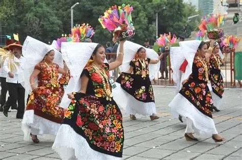

La ZandungaLa sandunga, también conocida como Sandunga, es una canción tradicional mexicana del istmo de Tehuantepec, Oaxaca. Se han escrito diversos versos de esta canción, tanto en español como en zapoteco y náhuatl, aunque los más conocidos son de la autoría del compositor oaxaqueño Máximo Ramón Ortiz. La palabra sandunga es de origen incierto. Algunos atribuyen su significado a la voz zapoteca que en español se traduce como «esa música profunda», aunque la teoría que tiene más peso señala un origen gitano; su acepción coloquial es el de gracia, donaire y salero, mientras que en países como Chile, Colombia y Puerto Rico es sinónimo de «parranda» o «juerga bulliciosa». La Sandunga es el himno por antonomasia de los istmeños e inclusive de los oaxaqueños que viven fuera de este estado. Llegó a México como una pieza de jaleo andaluz en 1850, y tres años después en Oaxaca fue ejecutada como danza de corte europeo. |
 |